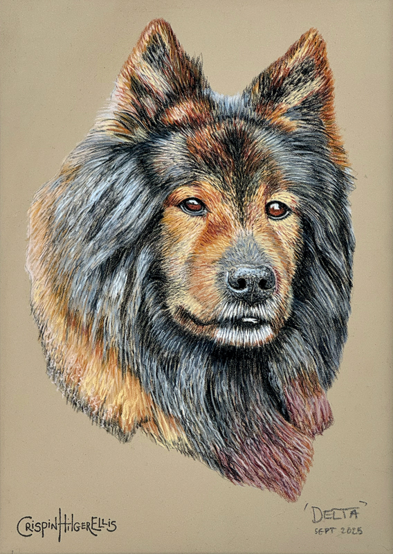
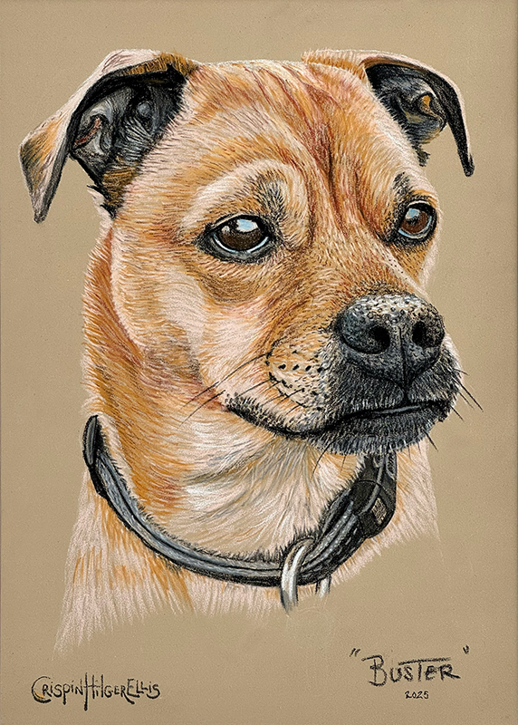
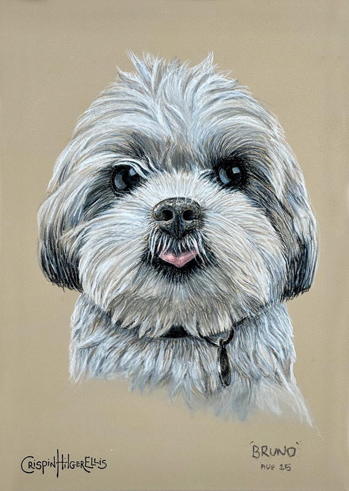
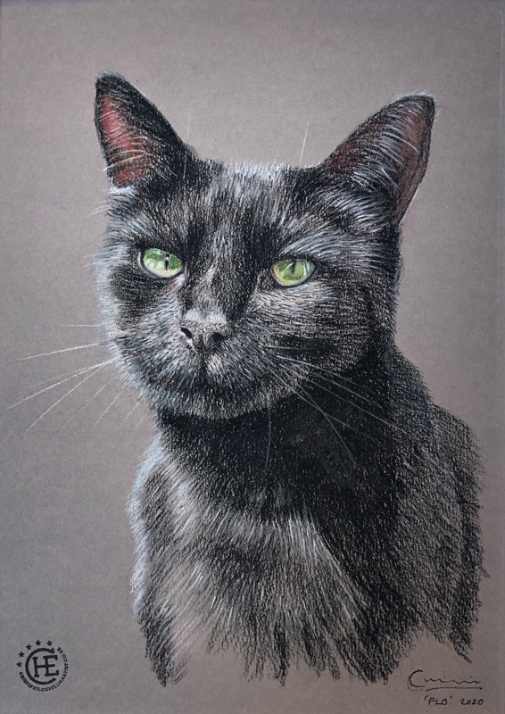

Gallery





Beautiful, hand-crafted portraits that capture your pet’s personality
I create pet portraits using pastel pencils on a strong coloured texture paper. I like the immediacy of the the pencils which can build layers of colour to suggest the form and the individual carticature of each subject. Light is very important to get a strong image as I like the portraits to look realisitc in the final piece. Once the portrait is complete it will be framed in a simple elegantglass, black frame with a white border. If you would like me to capture your beloved companion please use the email link below. Look forward to hearing from you.
Commissioning a portrait is simple:
Each portrait is unique and made to order, capturing your pet’s personality and character in timeless artwork.
For inquiries or to commission a portrait, please email me at:crispinhilgerellis@icloud.com